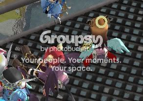

คุณสมบัติไม่ต่างจากกระเป๋าธรรมดาเลย ต่างกันแค่ลายเท่านั้นเอง(รูปร่างก็เหมือนกัน) ^ ^"
ที่แน่ๆคือแพงกว่า เพราะแค่ Insmouse's cloth ก็ 10000G แล้ว heart อีก 2100G
~* Warlock Guide *~ Ver1.2 [Update Into Necromancer!]
 โดย ECO » พฤหัสฯ. 17 พ.ค. 2007 4:09 pm
โดย ECO » พฤหัสฯ. 17 พ.ค. 2007 4:09 pm
ใช่จิ เราว่าจะ เซฟ เงินซะหน่อยเลยหาวิทีทําอันนี้ ไปๆมาๆ เยอะกว่าเดิมPorphyryl เขียน:คุณสมบัติไม่ต่างจากกระเป๋าธรรมดาเลย ต่างกันแค่ลายเท่านั้นเอง(รูปร่างก็เหมือนกัน) ^ ^"
ที่แน่ๆคือแพงกว่า เพราะแค่ Insmouse's cloth ก็ 10000G แล้ว heart อีก 2100G
- ECO
- Dark Warrior
- โพสต์: 276285
- ลงทะเบียนเมื่อ: พุธ 26 ต.ค. 2011 9:31 pm
 แต่ยังมีกระเป๋าอีกแบบนึง ราคา 8000G เหมือนกัน แต่ซื้อที่ morg
แต่ยังมีกระเป๋าอีกแบบนึง ราคา 8000G เหมือนกัน แต่ซื้อที่ morg โดย ECO » พฤหัสฯ. 17 พ.ค. 2007 11:35 pm
โดย ECO » พฤหัสฯ. 17 พ.ค. 2007 11:35 pm
Porphyryl เขียน:ถามเกี่ยวกับสกิล chaos widow หน่อย
มันดีมากหรือเปล่า เห็นว่าแรงกว่า black widow ไม่มาก แต่กิน mp เยอะกว่ามาก
มีข้อดียังไงบ้าง?
ถ้าจำไม่ผิดรู้สึกว่าจะร่ายไวกว่านะครับ แต่ผมไม่ชัวร์นะ
- ECO
- Dark Warrior
- โพสต์: 276285
- ลงทะเบียนเมื่อ: พุธ 26 ต.ค. 2011 9:31 pm
 โดย ECO » ศุกร์ 18 พ.ค. 2007 2:20 am
โดย ECO » ศุกร์ 18 พ.ค. 2007 2:20 am
cowes widow จะร่ายเร็วกว่า black widowนะ แต่ว่าจะกินมาน่ามากกว่า ความแรงต่างกันเล็กน้อยจนแทบไม่รู้สึก แนะนำว่าให้อัพท่าcowes widowแค่เลเวล1พอ เลเวลหลังๆใช้ท่านี้ยามฉุกเฉินบ่อย เพราะเป็นสกิลที่เรียกได้ว่ายิงเร็วที่สุด
- ECO
- Dark Warrior
- โพสต์: 276285
- ลงทะเบียนเมื่อ: พุธ 26 ต.ค. 2011 9:31 pm
 โดย ECO » ศุกร์ 18 พ.ค. 2007 5:31 am
โดย ECO » ศุกร์ 18 พ.ค. 2007 5:31 am
Tirgoviste เขียน:อ่า จากวิกินะ เราไม่เคยลองทำ อาจผิดพลาดกระเป๋า มี 3 สี แดง ม่วง และ ฟ้า
ใช้ชุดเข็มที่ซื้อที่เมืองเหนืออ่ะ หรือมีที่อื่นด้วยหว่า
ใช้ของ 4 อย่าง ทำที่ป้าตัดเย็บ คือ
1.ด้าย Thread 4 อัน
2.หัวใจ ที่เปนเครื่องประดับอ่ะ ขายที่อัพทาวก้อมี 1 อัน
3.ผงสี 1 อัน ตามสีที่อยากได้เลย 1 ใน 3 สี
4.หนังปลามั๊ง(อันนี้ไม่ชัว) มีตัวนึงดรอปแต่ไม่รุ้ว่าตัวไหน
หรือไม่ก้อมีขายที่พ่อค้าในดันเมืองเหนืออ่ะ
ที่อยุ่ลึกสุดเลย ที่ต้องใช้ซุปถึงจาซื้อได้อ่ะ 1 อัน
รู้สึกว่าแต่ละสีจะใส่ได้กันคนละเผ่านะ
สีแดง อีมิลใส่ได้
สีฟ้า ไททาเนีย
สีม่วง โดมิเนียน
(ที่แพงที่สุดเห็นจะเป็น สีแดงกับสีฟ้า- -'' )
น่าจะประมาณนี้ เพราะซื้อที่เดวกาน*-* (ไม่มีภาพไหนที่ถ่ายชัดๆเลยซักอันง่ะ)


- ECO
- Dark Warrior
- โพสต์: 276285
- ลงทะเบียนเมื่อ: พุธ 26 ต.ค. 2011 9:31 pm
 โดย ECO » ศุกร์ 18 พ.ค. 2007 11:14 am
โดย ECO » ศุกร์ 18 พ.ค. 2007 11:14 am
Tirgoviste เขียน:วอล๊อกเล่นสาย blow แล้วดีหรอ ไมที่เซิฟเกาหลีเล่นเยอะอ่ะ
ดีจิงป่าวอ่า จาได้หันมาเล่น เสียดายตอนโคสไม่ได้ลอง T T
แนะนำหน่อยจิ ว่าเล่นดีป่าว
ตามที่เห็นอ่ะนะ ในแมปโจรที่ฟาอีส จะเห็นวาลอคสายโบวไปเก็บอ่ะ
ตอนแรกก้อใช้สกิลทำให้เป็นน้ำแข็งก่อน จากนั้นก้อใส่อาวุดมืดให้ตัวเอง แล้วก้อโบวๆๆ*-*
แต่ยังไม่เคยเห็นสายเวทย์ที่แมปนั้นเลย เห็นแต่พวกหนอนแดง
ปล. วาลอคที่เกาหลี คนเล่นน้อยจิงๆ= =
ปล2. ยังไม่เคยได้ลองเล่นเหมือนกัน-''-
- ECO
- Dark Warrior
- โพสต์: 276285
- ลงทะเบียนเมื่อ: พุธ 26 ต.ค. 2011 9:31 pm
 โดย ECO » ศุกร์ 18 พ.ค. 2007 6:49 pm
โดย ECO » ศุกร์ 18 พ.ค. 2007 6:49 pm
คาบาลีส สาย สาป+ยิง รายงานตัวคะ
กะลังสงสัยความสามารถของวงเวท(ที่ร่ายใส่พื้นเพื่อเปลี่ยนธาตุอะนะ)
อยากรู้ว่าเวลาPVPถ้าเรา เสกเกาะธาตุมืดใส่ตัวเอง+ร่ายวงเวทใส่ใต้เท้าตัวเอง ชาแมนจะยิงลดลง2เท่าเลยไหมเนี่ย :twisted: (ว่าแต่ใครมันจะปล่อยให้เราร่ายวงเวทจบหว่า hock: )
hock: )
กะลังสงสัยความสามารถของวงเวท(ที่ร่ายใส่พื้นเพื่อเปลี่ยนธาตุอะนะ)
อยากรู้ว่าเวลาPVPถ้าเรา เสกเกาะธาตุมืดใส่ตัวเอง+ร่ายวงเวทใส่ใต้เท้าตัวเอง ชาแมนจะยิงลดลง2เท่าเลยไหมเนี่ย :twisted: (ว่าแต่ใครมันจะปล่อยให้เราร่ายวงเวทจบหว่า
- ECO
- Dark Warrior
- โพสต์: 276285
- ลงทะเบียนเมื่อ: พุธ 26 ต.ค. 2011 9:31 pm
 โดย ECO » ศุกร์ 18 พ.ค. 2007 7:29 pm
โดย ECO » ศุกร์ 18 พ.ค. 2007 7:29 pm
LiViA เขียน:คาบาลีส สาย สาป+ยิง รายงานตัวคะ
กะลังสงสัยความสามารถของวงเวท(ที่ร่ายใส่พื้นเพื่อเปลี่ยนธาตุอะนะ)
อยากรู้ว่าเวลาPVPถ้าเรา เสกเกาะธาตุมืดใส่ตัวเอง+ร่ายวงเวทใส่ใต้เท้าตัวเอง ชาแมนจะยิงลดลง2เท่าเลยไหมเนี่ย :twisted: (ว่าแต่ใครมันจะปล่อยให้เราร่ายวงเวทจบหว่า
ลดลงครับถ้าชาแมนอยู่ในรัศมีของวงเวทย์ แต่ไม่รู้เท่าไหร่ ต้องดูจากพลังธาตุมืดในตัวเรา
- ECO
- Dark Warrior
- โพสต์: 276285
- ลงทะเบียนเมื่อ: พุธ 26 ต.ค. 2011 9:31 pm
 โดย ECO » ศุกร์ 18 พ.ค. 2007 9:13 pm
โดย ECO » ศุกร์ 18 พ.ค. 2007 9:13 pm
สกิลวงเวทย์จะทำให้พลังธาตุมืดของผู้ที่อยู่ในวงเป็น 100 ทันที นั่นหมายความว่าถ้าเราอยู่ในวงเวทย์ เราจะโดนสกิลของชาแมนเบาลง 33% แน่นอน แต่ต้องระวัง เพราะถ้าคู่ต่อสู้เข้ามาในวงเวทย์ได้ เราจะใช้ธาตุความมืดโจมตีใส่ได้ 0 นั่นคือไม่สามารถสร้างความเสียหายด้วยธาตุมืดภายในวงเวทย์ได้เลย ส่วนความเสียหายด้วยธาตุ ไฟ น้ำ ดิน ลม จะลดลงเหลือ 67%LiViA เขียน:คาบาลีส สาย สาป+ยิง รายงานตัวคะ
กะลังสงสัยความสามารถของวงเวท(ที่ร่ายใส่พื้นเพื่อเปลี่ยนธาตุอะนะ)
อยากรู้ว่าเวลาPVPถ้าเรา เสกเกาะธาตุมืดใส่ตัวเอง+ร่ายวงเวทใส่ใต้เท้าตัวเอง ชาแมนจะยิงลดลง2เท่าเลยไหมเนี่ย :twisted: (ว่าแต่ใครมันจะปล่อยให้เราร่ายวงเวทจบหว่า
เพราะฉะนั้นสกิลนี้น่าจะใช้กัน warlock ด้วยกันเองมากกว่านะ แต่กันได้เฉพาะ warlock สายเวทย์
- ECO
- Dark Warrior
- โพสต์: 276285
- ลงทะเบียนเมื่อ: พุธ 26 ต.ค. 2011 9:31 pm
ผู้ใช้งานขณะนี้
่กำลังดูบอร์ดนี้: ไม่มีสมาชิก และ บุคคลทั่วไป 1 ท่าน